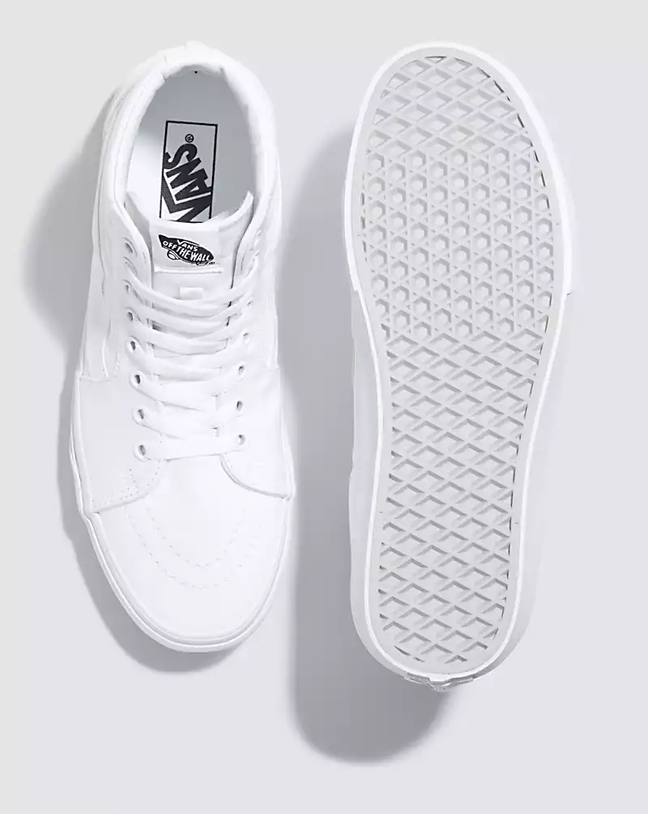

|  | Shoe Background:The Legendary High-Top that’s been Changing the Game Since 1978.The Sk8-Hi was a game changer as the first high-top skate shoe to break onto the scene. With a padded collar for ankle support and reinforced toe caps, it remains a style like no other. The Sk8-Hi was our second model to showcase the Vans Sidestripe, and its bold design has remained iconic ever since. Color Style:-White If you want to buy this Item Just go to:Vans Philippines |